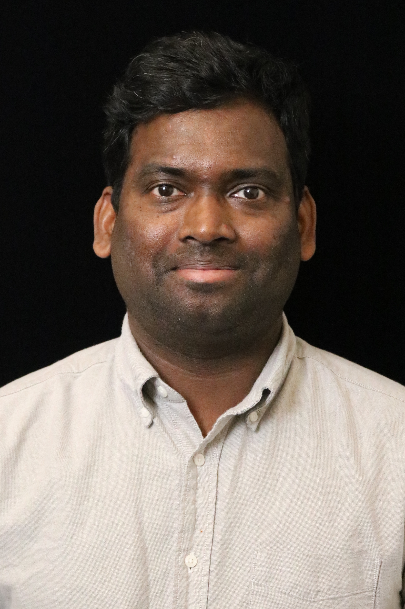

I currently work on building Ternsor RT Compiler
Most recently, I worked at Amazon as a backend compiler engineer, focusing on scheduling, engine balancing, dependency analysis and allocation for Trainium devices . Before that, I spent several years in the EDA space at Synopsys and Xilinx, working on placement and routing problems.
I graduated from University of Cincinnati in Electrical Engineering. I did my Bachelors in Electrical and Electronics Engineering at Birla Institute of Technology and Science, Pilani, Hyderabad Campus.